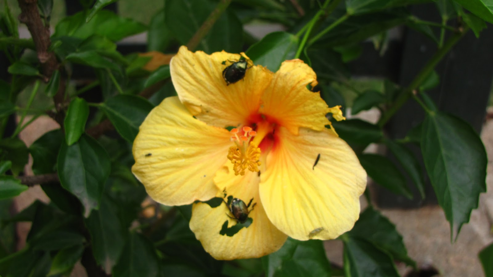
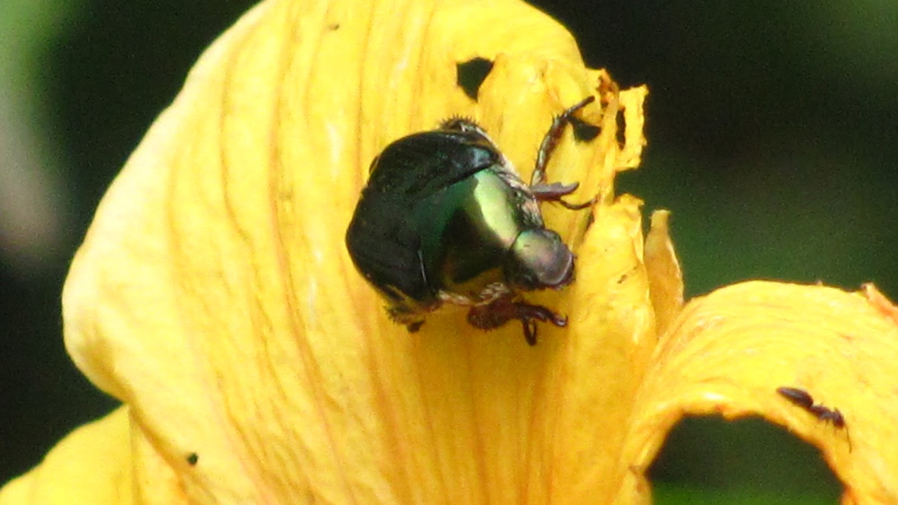
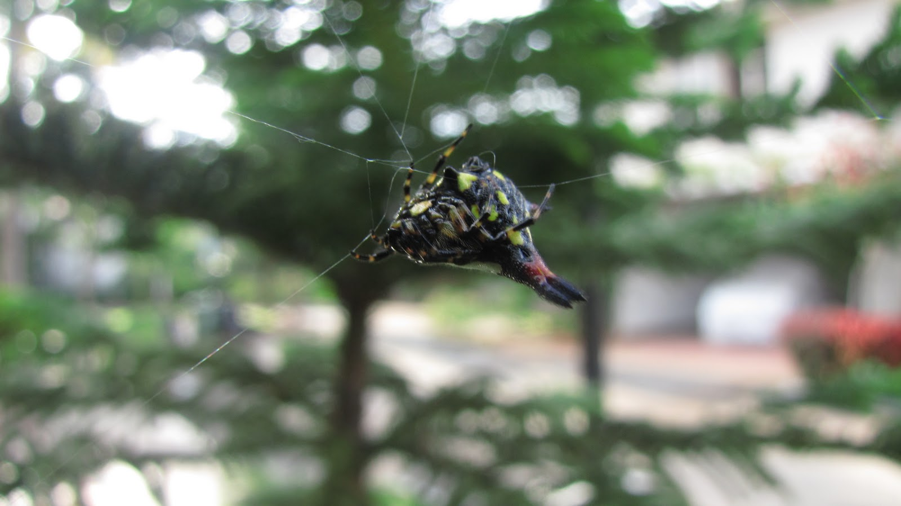
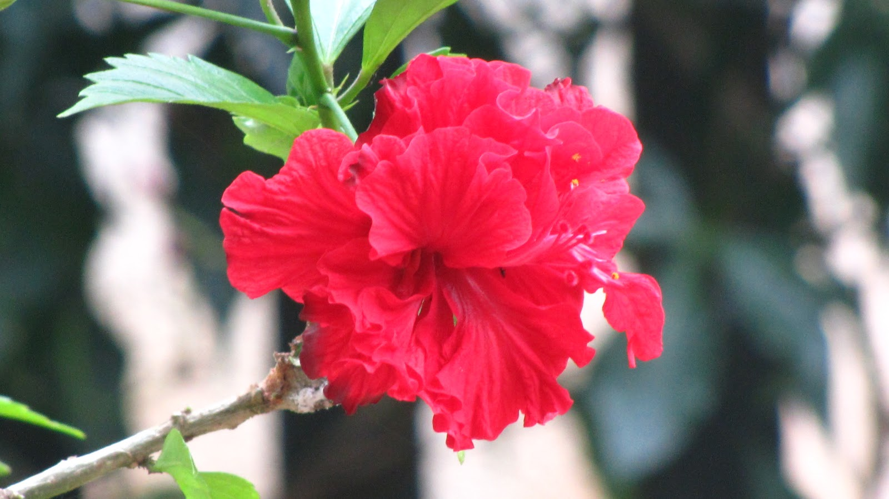
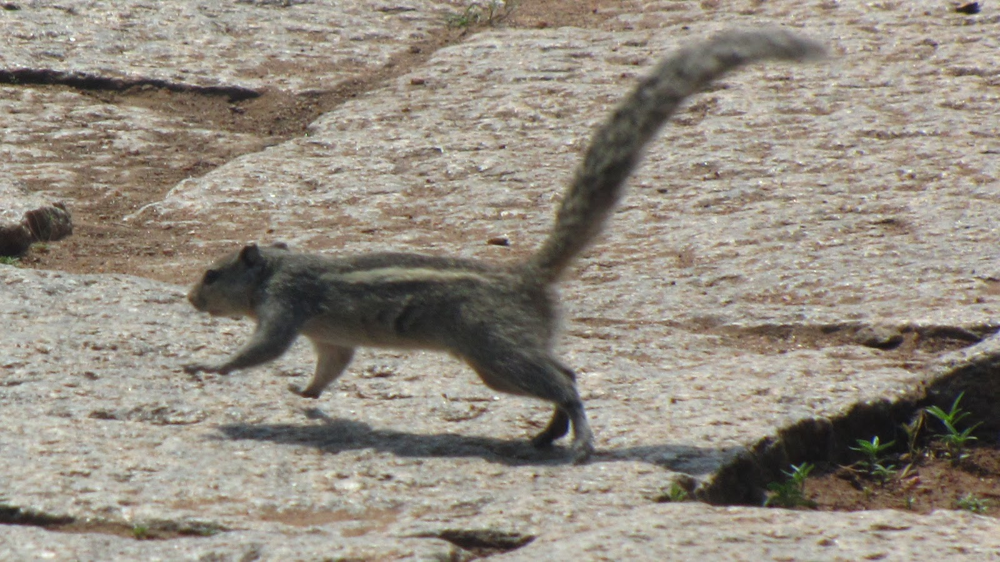
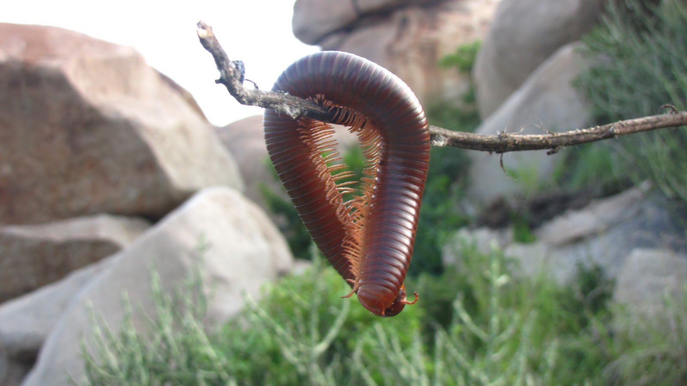
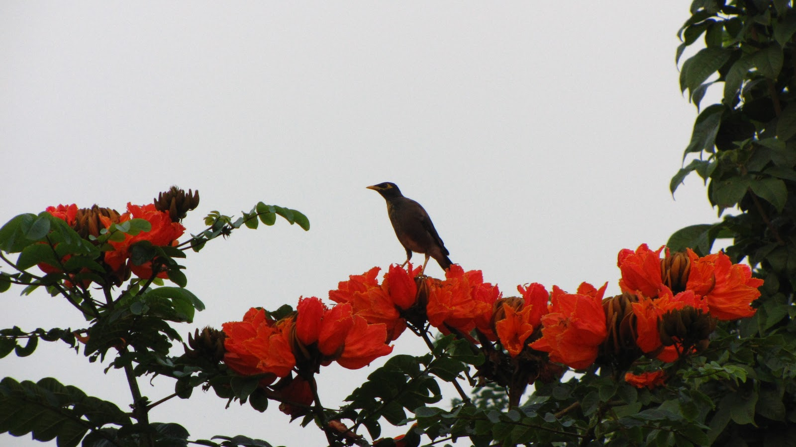
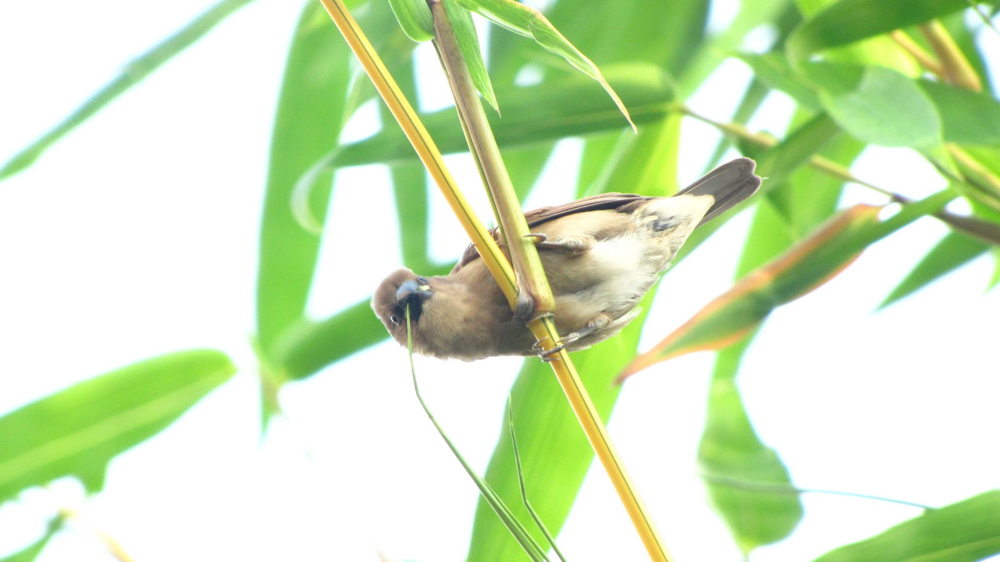

Hi guys, its been a long time since I've updated this. Got a few photos with my awesome Canon SX1-IS cam. (click to enlarge)

A pity, because I always found that a rather attractive flower. But a great photo opportunity as well!

Why thee vile insect, must consume min winsome flower? (old English, just for the heck of it)

I love this photo. Super macro, so the spider was almost touching the lens of the cam. Came out really well though.

Not much to say, but like the colours of this.

Timing is the essence of photography. Looks good as well.

One of my favorite bugs; the millipede. The revolting insect was dangling from a twig when I captured it (sounds like pokemon there).

Could have put a bit more emphasis on the bird, but the flowers gave the picture a nice setting,

A pretty good shot to get it in that pose. Over-exposed (+2) I think, but that puts the bird in the spotlight.
Hope you like the photos. Review and comment.
Go Top